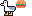
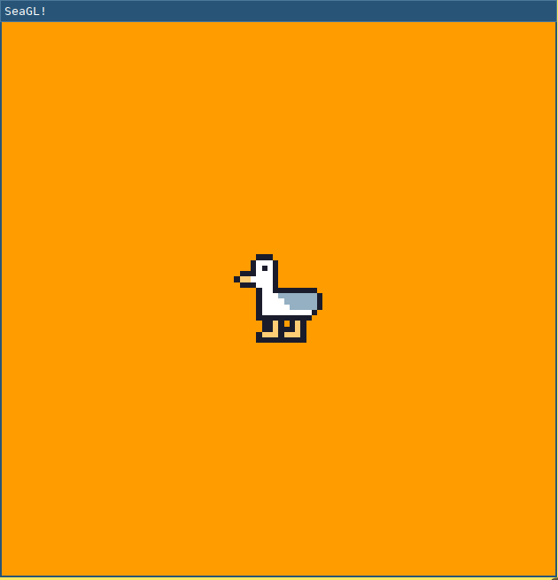
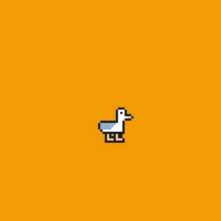
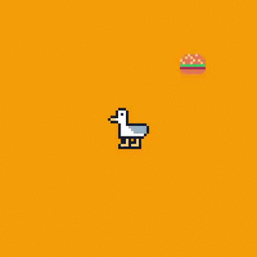

whoami
Elijah Voigt
Python developer working on Enterprise Cloud Management software. We're hiring. https://cloudbolt.io
Rust fanboy by hobby. Tinkers with games.
Lucy Wyman++
Making Games: Entities, Components, Systems ⚙️
Game Loop:
- Read Input.
- Change State.
- Draw State.
- Repeat ~60/sec.
Entities
IDs tied to a set of Components.
| Entity ID | Position | Hat | Carnivore | Herbivore |
|---|---|---|---|---|
| 019 | (1, 1, 1) | "fedora" | ||
| 021 | (15, 17 1) | "baseball" | carnivore | |
| 021 | (12, 1, 1) | |||
| 043 | (15, 21 1) | herbivore | ||
| 044 | (15, 19 1) | "beanie" | herbivore | |
| 045 | (15, 22 1) | herbivore |
Components
Data used to describe traits of an entity.
Examples:
- Mass(Int)
- Position(X, Y, Z)
- Velocity(Int)
- Health(Int)
- Hat(HatID)
- Carnivore / Herbivore
Systems
Procedures acting on a subset of entities with some components
# Iterate over all carnivores
# Only use the Carnivore and Position components.
for (carnivore, carn_pos) in Entities.query(Carnivores, Positions):
# Iterate over all herbivores
# Only use the Herbivore and Position components.
for (herbivore, herb_pos) in Entities.query(Herbivores, Positions):
# Do some interaction between the entity components
if carn_pos is_near herb_pos:
carnivore.target(herbivore)
Tools of the Trade: C and C++ ⚒️
| Pros | Cons |
|---|---|
| Fast | Legacy design quirks Not writing object oriented! Unsafe |
Rusty Games: Hello Amethyst 💎
Rust:
- Zero-cost abstractions
- Memory safe
- Fast
Amethyst:
- Includes useful basic features
- Has a well designed API
- Is data driven
Step 0: Join the Cargo Cult
- Install
rustup - Start a blank Rust project:
$ cargo new seagl-game
$ cd seagl-game
- Add Amethyst to
Cargo.toml:
[dependencies.amethyst]
version = "0.15.1"
features = ["vulkan"] # "metal" on MacOS
- Build the project:
$ cargo build
...
Compiling stuff v1.2.3
...
Step 1: Draw a Window 📐
use amethyst::{
assets::{AssetStorage, Loader},
core::{
timing::Time,
transform::{Transform, TransformBundle},
},
derive::SystemDesc,
ecs::{
Component, DenseVecStorage, Entities, Join, Read, ReadStorage, System, SystemData,
WriteStorage,
},
input::{InputBundle, InputHandler, StringBindings},
prelude::*,
renderer::{
plugins::{RenderFlat2D, RenderToWindow},
types::DefaultBackend,
Camera, ImageFormat, RenderingBundle, SpriteRender, SpriteSheet, SpriteSheetFormat,
Texture,
},
utils::application_root_dir,
};
Create the game
fn main() -> amethyst::Result<()> {
amethyst::start_logger(Default::default());
let app_root = application_root_dir()?;
let assets_dir = app_root.join("assets");
let display_config_path = app_root.join("config").join("display.ron");
let renderer = RenderingBundle::<DefaultBackend>::new()
.with_plugin(
RenderToWindow::from_config_path(display_config_path)?
.with_clear([1.00, 0.33, 0.00, 1.0]),
).with_plugin(RenderFlat2D::default());
let game_data = GameDataBuilder::default()
.with_bundle(renderer)?;
let mut game = Application::new(assets_dir, SeaglState, game_data)?;
game.run();
Ok(())
}
Add a State
$ cargo run
...
error[E0425]: cannot find value `SeaglState` in this scope
--> src/main.rs:17:49
|
30 | let mut game = Application::new(assets_dir, SeaglState, game_data)?;
| ^^^^^^^^^^ not found in this scope
Add the Seagl game state:
struct SeaglState;
impl SimpleState for SeaglState { }
Add a Display Config
Compiling seagl-talk v0.1.0 (/home/pop/seagl-talk)
Finished dev [unoptimized + debuginfo] target(s) in 24.81s
Running `target/debug/seagl-talk`
Error: { ... "No such file or directory" ... }
Add the display config:
// config/display.ron
(
title: "SeaGL!",
dimensions: Some((500, 500)),
)
And here's what we got

Step 2: Draw a SeaGL 🕊️
#[derive(Default)]
pub struct Seagl;
impl Component for Seagl {
type Storage = DenseVecStorage<Self>;
}
Create the Seagl entity
impl SimpleState for SeaglState {
fn on_start(&mut self, data: StateData<GameData>) {
data.world.register::<Seagl>();
let mut transform = Transform::default();
transform.set_translation_xyz(50.0, 50.0, 0.0);
let seagl = Seagl::default();
data.world
.create_entity()
.with(seagl)
.with(transform)
.build();
}
}
Give the Seagl a Sprite
let sprite_sheet_handle = {
let loader = data.world.read_resource::<Loader>();
let texture_storage = data.world.read_resource::<AssetStorage<Texture>>();
let texture_handle = loader.load(
"texture/spritesheet.png",
ImageFormat::default(),
(),
&texture_storage,
);
let sprite_sheet_store = data.world.read_resource::<AssetStorage<SpriteSheet>>();
loader.load(
"texture/spritesheet.ron",
SpriteSheetFormat(texture_handle),
(),
&sprite_sheet_store,
)
};
Give the Seagl a Sprite
++ main.rs
@@ impl SimpleState for SeaglState
@@ fn on_start(...)
let mut transform = Transform::default();
transform.set_translation_xyz(50.0, 50.0, 0.0);
+ let sprite = SpriteRender::new(sprite_sheet_handle.clone(), 0);
let seagl = Seagl::default();
data.world
.create_entity()
.with(seagl)
+ .with(sprite)
.with(transform)
.build();
Create the Spritesheet
Create the Spritesheet
// assets/texture/spritesheet.ron
List((
texture_width: 32,
texture_height: 16,
sprites: [
( // Seagl
x: 0,
y: 0,
width: 16,
height: 16,
),
( // Burger
x: 16,
y: 0,
width: 10,
height: 8,
),
],
))
Create a Camera
let mut transform = Transform::default();
transform.set_translation_xyz(50.0, 50.0, 1.0);
data.world
.create_entity()
.with(Camera::standard_2d(100.0, 100.0))
.with(transform)
.build();
Tada!
Step 3: Move Around 🏇
for every seagl that can move:
If the user input is "move horizontal":
Move the seagl horizontally
If the user input is "move vertical":
Move the seagl vertically
Create the Move System
[derive(SystemDesc)]
pub struct MoveSystem;
impl<'s> System<'s> for MoveSystem {
type SystemData = (
WriteStorage<'s, Transform>,
ReadStorage<'s, Seagl>,
Read<'s, Time>,
Read<'s, InputHandler<StringBindings>>,
);
fn run(&mut self,(mut transforms, seagls, time, input): Self::SystemData) {
...
}
Implement the Move System
fn run(&mut self, (mut transforms, seagls, time, input): Self::SystemData) {
let speed: f32 = 50.0;
for (_seagl, transform) in (&seagls, &mut transforms).join() {
if let Some(horizontal) = input.axis_value("horizontal") {
transform.prepend_translation_x(
horizontal * time.delta_seconds() * speed as f32
);
};
if let Some(vertical) = input.axis_value("vertical") {
transform.prepend_translation_y(
vertical * time.delta_seconds() * speed as f32
);
};
}
}
Input Mapping Config
// config/bindings.ron
(
axes: {
"horizontal": Emulated(pos: Key(Right), neg: Key(Left)),
"vertical": Emulated(pos: Key(Up), neg: Key(Down)),
},
actions: {},
)
Add our system to the runtime
+++ main.rs
@@ fn main() -> amethyst::Result<()>
)
.with_plugin(RenderFlat2D::default());
+ let bindings_path = app_root.join("config").join("bindings.ron");
+ let inputs = InputBundle::<StringBindings>::new().with_bindings_from_file(bindings_path)?;
+
let game_data = GameDataBuilder::default()
.with_bundle(transform)?
.with_bundle(renderer)?
+ .with_bundle(inputs)?
+ .with(MoveSystem, "move_system", &["input_system"]);
let mut game = Application::new(assets_dir, SeaglState, game_data)?;
It moves!

Look where you're going Seagl!
diff --git a/src/main.rs b/src/main.rs
@@ impl<'s> System<'s> for MoveSystem
@@ run(...)
if let Some(vertical) = input.axis_value("vertical") {
transform.prepend_translation_x(
horizontal * time.delta_seconds() * speed as f32
);
+ if horizontal > 0.0 {
+ transform.set_rotation_y_axis(std::f32::consts::PI);
+ }
+ if horizontal < 0.0 {
+ transform.set_rotation_y_axis(0.0);
+ }
+
};
if let Some(vertical) = input.axis_value("vertical") {
transform.prepend_translation_y(
It looks!
Step 4: Eat some food! 🍔
#[derive(Default)]
pub struct Food;
impl Component for Food {
type Storage = DenseVecStorage<Self>;
}
Spawn a burger
let burger_sprite = SpriteRender::new(sprite_sheet_handle.clone(), 1);
let mut transform = Transform::default();
transform.set_translation_xyz(75.0, 75.0, -1.0);
data.world
.create_entity()
.with(Food::default())
.with(burger_sprite)
.with(transform)
.build();
Think about eating burgers
For each seagl with a location:
For each Food with a location:
If the Seagl overlaps with the Food:
Destory that food
Add the Eat System
pub struct EatSystem;
impl<'s> System<'s> for EatSystem {
type SystemData = (
ReadStorage<'s, Transform>,
ReadStorage<'s, Seagl>,
ReadStorage<'s, Food>,
Entities<'s>,
);
fn run(&mut self, (transforms, seagls, foods, entities): Self::SystemData) {
...
}
}
Implement the Eat System
fn run(&mut self, (transforms, seagls, foods, entities): Self::SystemData) {
for (_seagl, seagl_pos) in (&seagls, &transforms).join() {
for (_food, food_pos, food) in (&foods, &transforms, &entities).join() {
if intersect(seagl_pos, food_pos) {
entities.delete(food).unwrap();
}
}
}
}
Add the Eat System to the runtime
+++ main.rs
@@ fn main() -> amethyst::Result<()>
let game_data = GameDataBuilder::default()
.with_bundle(transform)?
.with_bundle(renderer)?;
.with_bundle(inputs)?
.with(MoveSystem, "move_system", &["input_system"])
+ .with(EatSystem, "eat_system", &["move_system"]);
It eats!
Links
Code for this talk https://github.com/pop/lets-make-games-with-rust.
Blogpost for this talk https://elijahcaine.me/seagl-2020-lets-build-a-game-with-rust/
Rust Language: https://www.rust-lang.org/
Are We Game Yet?: https://arewegameyet.rs/
Amethyst Game Engine website: https://amethyst.rs/
Game Programming Patterns is an awesome book with a free & legal copy online: https://gameprogrammingpatterns.com/